练习题（一）
本练习配合第一节「杆件平衡」与第二节「绳索悬挂物平衡」使用，共 13 题。建议先用特殊方法分析，再用平衡条件验证。
第 1 题双绳悬挂水平杆
如图 1-31 所示，均匀杆 \( AB \) 长 \( 1\,\mathrm{m} \)，重 \( 10\,\mathrm{N} \)，用 \( OA \)、\( OB \) 两条细绳悬挂在 \( O \) 点。已知 \( \angle ABO = 30^\circ \)，\( \angle OAB = 60^\circ \)。为了使直杆 \( AB \) 水平静止，应把重 \( 20\,\mathrm{N} \) 的物体 \( m \) 悬挂在直杆 \( AB \) 上距 \( A \) 端多远处？此时 \( OA \)、\( OB \) 绳的张力分别是多少？
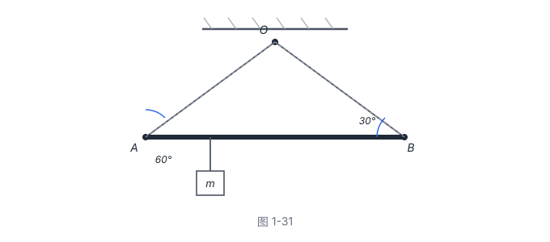
第 2 题铰链板托圆柱
如图 1-32 所示，\( AB \) 板重量不计，圆柱体重 \( G \)，\( D \) 为 \( AB \) 的中点，\( A \) 端为铰链，求：
（1）\( BC \) 绳受到的拉力。
（2）墙壁给 \( A \) 端的作用力。
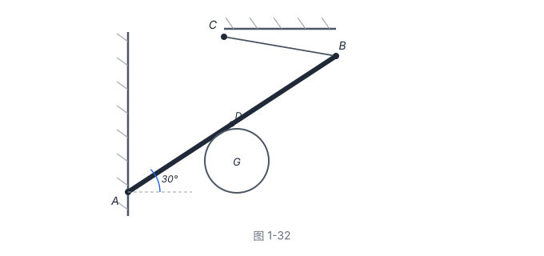
第 3 题两杆互支
有一均匀杆 \( AB \)，一端用铰链固定在 \( A \) 点，均匀杆 \( BC \)，一端用同样的方法固定在 \( C \) 点，另一端被 \( AB \) 支起，接触位置为 \( AB \) 的自由端 \( B \)，放手后两杆处于静止状态，如图 1-33 所示。已知 \( AB \) 重 \( 10\,\mathrm{N} \)，\( BC \) 重 \( 5\,\mathrm{N} \)，求杆 \( BC \) 对 \( AB \) 的作用力。
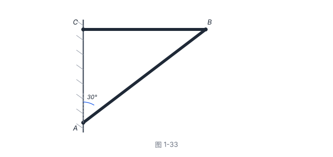
第 4 题电线杆将滑未滑
用绳将一重 \( 800\,\mathrm{N} \) 的均匀电线杆 \( AB \)，在竖直面内拉到图 1-34 所示位置时，\( B \) 端刚要开始滑动，而且绳与杆垂直，求此时电线杆对地面的压力和地面的最大静摩擦力。
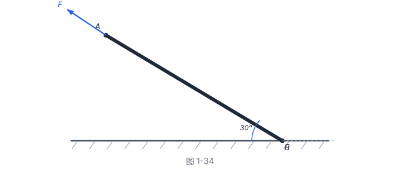
第 5 题正方形板靠墙悬挂
如图 1-35 所示，重为 \( G \) 的均匀正方形板 \( ABCD \)，悬在绳 \( BE \) 上，绳长与正方形边长相等，且均为 \( a \)，顶角 \( A \) 靠在光滑的墙上，求平衡时墙对 \( A \) 点的作用力 \( N \) 和绳子对板的拉力 \( T \)。
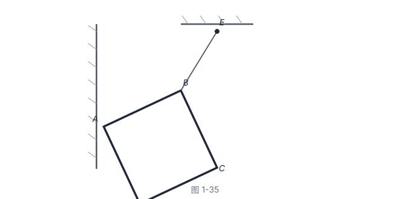
第 6 题圆柱槽内两圆柱体
有一水平放置的半径为 \( R \) 的圆柱形光滑槽面，其上放着两个半径均为 \( r \) 的光滑圆柱体 \( A \)、\( B \)。图 1-36 为圆柱体截面，\( O \) 为圆柱槽面轴线上的一点，\( A \)、\( B \) 重量分别为 \( G_1 \)、\( G_2 \)，且两个圆柱体半径 \( r = \dfrac{1}{3}R \)。求圆柱体平衡时，\( OA \) 线与铅直线间的夹角 \( \alpha \)。
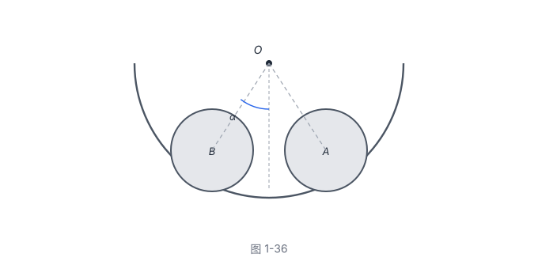
第 7 题杆撑墙绳吊角
如图 1-37 所示，一个均匀杆 \( AB \) 长为 \( L \)，用一长为 \( a \)（\( a > L \)）的细绳吊住杆的一端 \( B \)，绳的另一端系在竖直墙上 \( C \) 处，墙面光滑。现将杆的另一端撑在墙上 \( A \) 点而使整个系统处于平衡，求 \( AC \) 的长度。
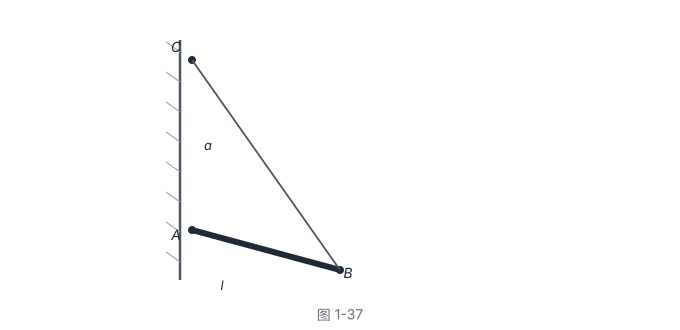
第 8 题杆靠光滑半球
质量均匀的重为 \( 30\,\mathrm{N} \)，长为 \( 1\,\mathrm{m} \) 的杆，一端支于地面，\( C \) 点靠在光滑的半球上，\( AC = \dfrac{3}{4}\,\mathrm{m} \)，\( \theta = 30^\circ \)，且 \( AB \) 杆处于静止状态，如图 1-38 所示。求杆 \( AB \) 对地面的作用力。
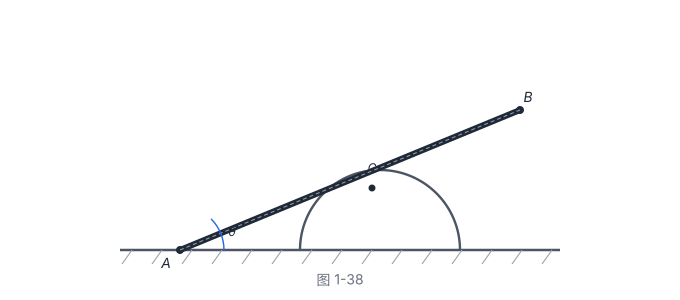
第 9 题棒双绳加水平拉力
重为 \( G \) 的均匀棒两端系绳。系在 \( A \) 端的绳固定于天花板，系在 \( B \) 端的绳以水平力 \( F \) 拉着棒，棒处于平衡，如图 1-39 所示。试求：
（1）系在 \( A \) 端的绳与竖直方向的夹角 \( \alpha \) 多大？
（2）棒与竖直方向的夹角 \( \beta \) 多大？
（3）\( A \) 端受绳的拉力 \( F \) 多大？
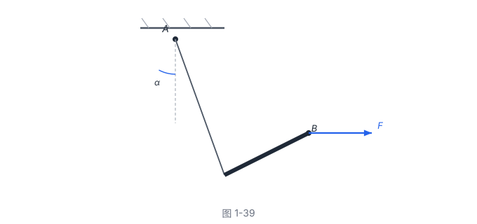
第 10 题水平棒双绳悬挂
在图 1-40 中，水平棒重 \( 100\,\mathrm{N} \)，用两条绳系于天花板上，绳都与天花板成 \( 30^\circ \) 角，试求每条绳的拉力是多少。
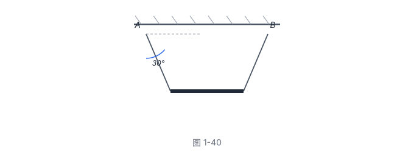
第 11 题半球系绳支地
如图 1-41 所示，用绳系半球于天花板，半球支在地面上，绳子沿竖直方向而处于平衡状态，半球重为 \( G \)，又已知 \( L_1 \) 和 \( L_2 \)，求绳的拉力。
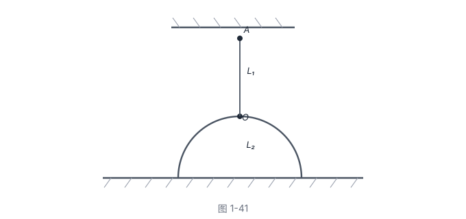
第 12 题正方形板两角挂重
如图 1-42 所示，有一块厚薄均匀正方形板 \( ABCD \)，其重为 \( G_1 \)，今在 \( C \)、\( D \) 两角顶各悬重物 \( G_2 \) 和 \( G_3 \)（\( G_3 > G_2 \)），如果用线系住 \( AB \) 边中点 \( E \)，将板悬挂起来，求平衡时 \( BC \) 边和铅垂线间的夹角 \( \theta \)。
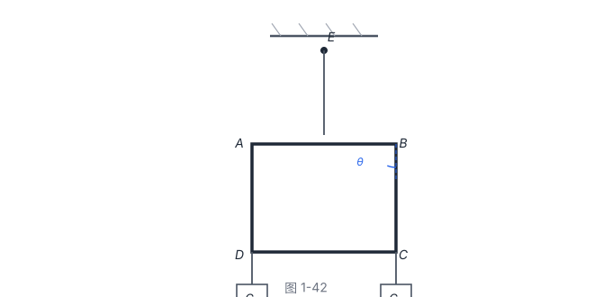
第 13 题直角三角板配重水平
一块厚薄均匀的直角三角板 \( ABC \)，重力为 \( G \)，在直角顶点 \( C \) 处用线将三角板悬挂起来，要使斜边水平，必须在 \( 60^\circ \) 角的顶点 \( A \) 处挂一重物 \( P \)，如图 1-43 所示。试证明重力 \( P = \dfrac{2}{3}G \)。
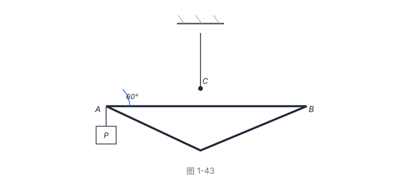